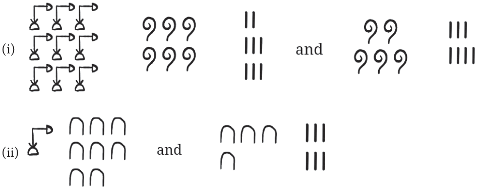
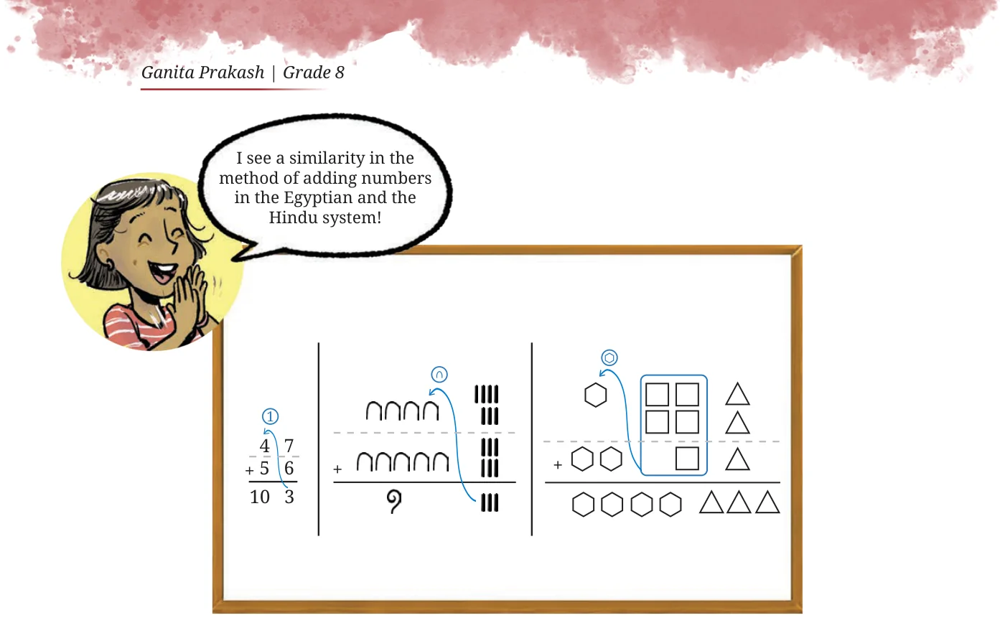
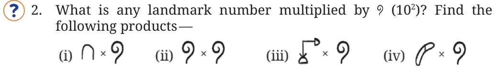
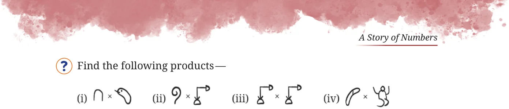
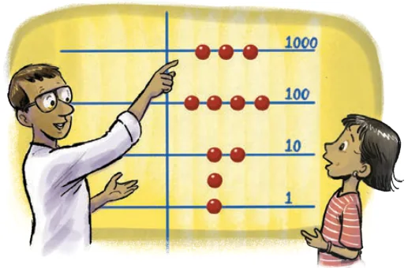

<!DOCTYPE html>
<html lang="en">
<head>
<meta charset="UTF-8">
<meta name="viewport" content="width=device-width,initial-scale=1">
<title>Figure it Out — A Story of Numbers</title>
<meta name="description" content="Class 8 Mathematics · Part 1 · A Story of Numbers · Figure it Out">
<link rel="icon" href="data:image/svg+xml,<svg xmlns='http://www.w3.org/2000/svg' viewBox='0 0 100 100'><text y='.9em' font-size='90'>📘</text></svg>">
<link rel="stylesheet" href="../../../assets/book.css">
<link rel="stylesheet" href="https://cdn.jsdelivr.net/npm/katex@0.16.11/dist/katex.min.css" crossorigin="anonymous">
</head>
<body>
<header class="topbar">
<div class="topbar-in">
  <div class="crumb">
    <span class="c1"><a href="../../../index.html">Library</a> · <a href="../../index.html">Class 8 Mathematics · Part 1</a></span>
    <span class="c2">A Story of Numbers · Figure it Out</span>
  </div>
  <a class="tb-btn" data-nav="prev" href="../../03-a-story-of-numbers/13-figure-it-out/index.html" title="Figure it Out">←</a>
  <details class="drawer"><summary class="tb-btn" title="Sections in this chapter">☰</summary>
<div class="drawer-panel"><div class="dh">A Story of Numbers</div><a href="../01-reema-s-curiosity-3.1/index.html">3.1 Reema’s Curiosity</a><a href="../02-the-mechanism-of-counting/index.html">The Mechanism of Counting</a><a href="../03-figure-it-out/index.html">Figure it Out</a><a href="../04-some-early-number-systems-3.2/index.html">3.2 Some Early Number Systems; I. Use of Body Parts</a><a href="../05-ii-tally-marks-on-bones-and-other-surfaces/index.html">II. Tally Marks on Bones and Other Surfaces</a><a href="../06-iii-number-names-obtained-by-counting-in-twos/index.html">III. Number Names Obtained by Counting in Twos</a><a href="../07-iv-the-roman-numerals/index.html">IV. The Roman Numerals</a><a href="../08-figure-it-out/index.html">Figure it Out</a><a href="../09-figure-it-out/index.html">Figure it Out</a><a href="../10-the-idea-of-a-base-3.3/index.html">3.3 The Idea of a Base; I. The Egyptian Number System</a><a href="../11-figure-it-out/index.html">Figure it Out</a><a href="../12-base/index.html">Base</a><a href="../13-figure-it-out/index.html">Figure it Out</a><a href="../14-figure-it-out/index.html" aria-current="page">Figure it Out</a><a href="../15-iii-shortcomings-of-the-egyptian-system/index.html">III. Shortcomings of the Egyptian System</a><a href="../16-figure-it-out/index.html">Figure it Out</a><a href="../17-place-value-representation-3.4/index.html">3.4 Place Value Representation; I. The Mesopotamian Number System</a><a href="../18-figure-it-out/index.html">Figure it Out</a><a href="../19-ii-the-mayan-number-system/index.html">II. The Mayan Number System</a><a href="../20-iii-the-chinese-number-system/index.html">III. The Chinese Number System</a><a href="../21-iv-the-hindu-number-system/index.html">IV. The Hindu Number System</a><a href="../22-a-numeral-375/index.html">A numeral 375</a><a href="../23-figure-it-out/index.html">Figure it Out</a><a href="../24-summary/index.html">SUMMARY</a><a href="../25-figure-it-out/index.html">Figure it Out</a><a href="../26-figure-it-out/index.html">Figure it Out</a><a href="../27-figure-it-out/index.html">Figure it Out</a><a href="../28-figure-it-out/index.html">Figure it Out</a><a href="../29-figure-it-out/index.html">Figure it Out</a><a href="../30-figure-it-out/index.html">Figure it Out</a><a href="../31-figure-it-out/index.html">Figure it Out</a><a href="../32-figure-it-out/index.html">Figure it Out</a><a href="../33-figure-it-out/index.html">Figure it Out</a></div></details>
  <a class="tb-btn" data-nav="next" href="../../03-a-story-of-numbers/15-iii-shortcomings-of-the-egyptian-system/index.html" title="III. Shortcomings of the Egyptian System">→</a>
  <button class="tb-btn" data-theme-toggle title="Toggle light / dark" aria-label="Toggle light or dark theme">◐</button>
</div>
<div class="progress"><span style="width:33.8%"></span></div>
</header>
<main class="wrap">
<div class="sec-head">
  <p class="eyebrow"><a href="../index.html">Chapter 3 · A Story of Numbers</a></p>
  <h1>Figure it Out</h1>
  <p class="sec-meta">Textbook pages 18–22 · 13 figures</p>
</div>
<article class="prose">
<ul class="qlist">
<li><span class="mk">1.</span><span class="lt">Add the following Egyptian numerals:</span></li>
</ul>
<figure class="fig wide"></figure>
<ul class="qlist">
<li><span class="mk">2.</span><span class="lt">Add the following numerals that are in the base-5 system that we</span></li>
</ul>
<p>created:</p>
<p>Remember that in this system, 5 times a landmark number gives the next one!</p>
<figure class="fig wide"></figure>
<figure class="fig table-fig wide"></figure>
<p>Contrast the addition done in a base-n number system with that done in the Roman system. In the Roman system, the grouping and rearranging has to be done carefully as it is not always by the same size that each landmark number has to be grouped to get the next one. The advantage of a number system with a base becomes more evident when we consider multiplication.</p>
<p>How to multiply two numbers in Egyptian numerals? Let us first consider the product of two landmark numbers.</p>
<ul class="qlist">
<li><span class="mk">1.</span><span class="lt">What is any landmark number multiplied by (that is 10)? Find the</span></li>
</ul>
<p>following products -</p>
<p>Each landmark number is a power of 10 and so multiplying it with 10 increases the power by 1, which is the next landmark number.</p>
<figure class="fig wide"></figure>
<figure class="fig wide"></figure>
<figure class="fig wide"></figure>
<p>Thus, the product of any two landmark numbers is another landmark number! Does this property hold true in the base-5 system that we created? Does this hold for any number system with a base? Math Talk What can we conclude about the product of a number and (10), in the Egyptian system?</p>
<ul class="qlist">
<li><span class="mk">(ii)</span><span class="lt">| \(\times\)</span></li>
</ul>
<p>| is the same as \(+ +\) |. Thus, | \(\times =\) ( \(+ +\) |) \(\times\) Will the distributive property hold here? For the same reason that it holds for (a + b) \(\times n\), it also holds when one of the numbers has more than 2 terms. For example, (a \(+ b +\) c) \(\times n =\) an + bn + cn. So,</p>
<figure class="fig wide"></figure>
<p>Now find the following products -</p>
<ul class="qlist">
<li><span class="mk">(i)</span><span class="lt">(ii)</span></li>
</ul>
<p>What would be a simple rule to multiply a number with ? As has been seen, a process of multiplying two numbers involves the multiplication of landmark numbers. When the landmark numbers are powers of a number, then their product is another landmark number. This fact simplifies the process of multiplication. However, this is not the case with the Roman numerals, which is why multiplication using them is difficult. Thus, a number system whose landmark numbers are powers of a number, i.e., a number system with a base, is efficient not only in number representation but also in its utility in carrying out arithmetic operations. The idea of a number system with a base was a turning point in the history of the evolution of number systems. Our modern Hindu number system is built on this structure.</p>
<p>Abacus that Makes Use of the Decimal System</p>
<p>In around the 11th century, even the people still using the Roman numerals started using a calculating device - the abacus - constructed using a decimal system. It was a board with lines, as shown in the Fig. 3.1. Starting from the line that stood for 1, each successive line stood for a successive power of 10.</p>
<figure class="fig"><figcaption>Fig. 3.1: Abacus</figcaption></figure>
<p>Numbers were represented in it as follows: the given number was first grouped into the landmark numbers (powers of 10), in exactly the same way we have been grouping them so far. For each power of 10, as many counters were placed on its line as the number of times it occurred</p>
<figure class="fig wide"></figure>
<figure class="fig wide"></figure>
<p>in the grouping. The presence of a counter above a line contributed a value of 5. For example let us take the number 3426. It can be grouped as</p>
<div class="mathblock"><p>3426 \(= 1000 + 1000 + 1000 + 100 + 100 + 100 + 100 + 10 + 10+ 1 + 1 + 1 + 1 + 1 + 1\)</p></div>
<p>This number was represented as shown in Fig. 3.1. Notice how the 6 ones are represented. To get an idea of how the abacus was used for calculations, let us consider a simple addition problem: \(2907 + 43\). The two numbers were taken on either side of the vertical partition.</p>
<figure class="fig wide"></figure>
<p>How would you use this to find the sum? The counters along each line were brought together. What is to be done if the total in a line exceeded 10? Hint: In this problem, the 7 ones and the 3 ones together make 10 ones which contributes a counter to the line representing 10s.</p>
</article>
<nav class="pager"><a class="" data-nav="prev" href="../../03-a-story-of-numbers/13-figure-it-out/index.html"><span class="dir">← Previous</span><span class="t">Figure it Out</span><span class="ch">A Story of Numbers</span></a><a class="nx" data-nav="next" href="../../03-a-story-of-numbers/15-iii-shortcomings-of-the-egyptian-system/index.html"><span class="dir">Next →</span><span class="t">III. Shortcomings of the Egyptian System</span><span class="ch">A Story of Numbers</span></a></nav>
</main><footer class="site">Generated from the source textbook PDFs · text, figures and exercises belong to their respective publishers.</footer><script defer src="https://cdn.jsdelivr.net/npm/katex@0.16.11/dist/katex.min.js" crossorigin="anonymous"></script>
<script defer src="https://cdn.jsdelivr.net/npm/katex@0.16.11/dist/contrib/auto-render.min.js" crossorigin="anonymous"
  onload="renderMathInElement(document.body,{delimiters:[
    {left:'\\(',right:'\\)',display:false},
    {left:'$$',right:'$$',display:true},
    {left:'\\[',right:'\\]',display:true}],throwOnError:false,ignoredTags:['script','noscript','style','textarea','pre','code']})"></script>
<script src="../../../assets/book.js"></script>
</body>
</html>
